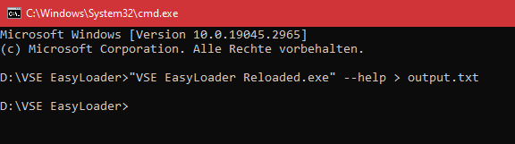
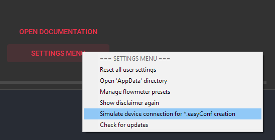
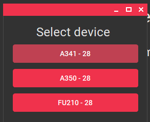

Erweiterte Funktionen#
Befehlszeilenschnittstelle#
Beschreibung#
Der VSE EasyLoader 6.0.7 Headless Mode ist ein Befehlszeilenprogramm, das entwickelt wurde, um das Hochladen von XML- und XLSX-Dateien auf ein Gerät über einen seriellen Anschluss zu erleichtern. Dieses Programm eliminiert die Notwendigkeit einer grafischen Benutzeroberfläche und ermöglicht automatisierte und Batch-Uploads von Dateien.

Verwendung#
Um den VSE EasyLoader 6.0.7 Headless Mode zu verwenden, führen Sie das Programm mit den folgenden Befehlszeilenoptionen aus:
"VSE EasyLoader Reloaded.exe" [command] [options]
Befehle#
Das Programm unterstützt die folgenden Befehle:
upload: Lädt eine XML-Datei über den angegebenen COM-Port auf ein Gerät hoch.lintable: Lädt eine EasyCal-Kalibrierung über den angegebenen COM-Port auf ein Gerät hoch.
Optionen#
Jeder Befehl unterstützt die folgenden Optionen:
-
--com <com>: Gibt den COM-Port an, der für die Kommunikation verwendet werden soll. Der Parameter<com>sollte durch die spezifische COM-Port-Nummer ersetzt werden, z.B.COM23. Diese Option ist für eine erfolgreiche Kommunikation mit dem Gerät erforderlich. -
--xml <xml>(für denupload-Befehl): Gibt den Pfad zur XML-Datei an, die die hochzuladenden Daten enthält. Der Parameter<xml>sollte durch den Dateipfad ersetzt werden. Es ist notwendig, eine gültige XML-Datei für einen erfolgreichen Upload bereitzustellen. -
--xlsx <xlsx>(für denlintable-Befehl): Gibt den Pfad zur XLSX-Datei an, die die hochzuladenden Daten enthält. Der Parameter<xlsx>sollte durch den Dateipfad ersetzt werden. Stellen Sie sicher, dass die XLSX-Datei ordnungsgemäß formatiert ist. -
--version: Zeigt die Versionsinformationen des Programms an. -
-?, -h, --help: Zeigt die Hilfe- und Verwendungsinformationen für das Programm an.
Note
Das Argument --com ist optional, wenn nur ein Gerät an den PC angeschlossen ist. Das Programm wird dann nach Ports suchen und den gefundenen verwenden. Wenn keine oder mehr als ein Gerät gefunden wird, tritt ein Fehler auf, und Sie müssen den COM-Port manuell angeben.
Beispielverwendung#
Hier sind einige Beispiele, wie Sie den VSE EasyLoader 6.0.7 Headless Mode verwenden können:
Hochladen einer XML-Datei auf ein Gerät an COM23:
"VSE EasyLoader Reloaded.exe" upload --com COM23 --xml "C:/path/to/file.xml"
Hochladen einer EasyCal-Kalibrierung auf COM23:
"VSE EasyLoader Reloaded.exe" lintable --com COM23 --xlsx "C:/path/to/file.xlsx"
Abrufen des Ergebnisses / Erfolgsstatus des Programms#
Beim Verwenden des VSE EasyLoader 6.0.7 Headless Mode wird die Ausgabe oder das Ergebnis standardmäßig möglicherweise nicht auf der Konsole angezeigt. Um die Ausgabe zu erfassen, wird empfohlen, den > Operator in der Befehlszeile zu verwenden, um die Ausgabe in eine Textdatei umzuleiten. Zum Beispiel:
"VSE EasyLoader Reloaded.exe" upload --com COM23 --xml "C:/path/to/file.xml" > output.txt
Durch die Verwendung des > Operators und die Angabe eines Dateinamens (z.B. output.txt) können Sie die Programmausgabe in einer Textdatei speichern, um sie später nachzuschlagen. Ohne Umleitung der Ausgabe funktioniert das Programm weiterhin korrekt, aber es wird keine Ausgabe auf der Konsole angezeigt.
Batch-Dateien#
Automatisieren des Lintable-Uploads mit einer Batch-Datei#
Um den Upload-Prozess von EasyCal-Kalibrierungs-Tabellenkalkulationen zu vereinfachen, können Sie eine Batch-Datei erstellen, die automatisch die XLSX-Datei im aktuellen Verzeichnis findet und sie mit dem VSE EasyLoader hochlädt. Unten ist ein Beispiel für eine .bat-Datei:
@echo off
setlocal
rem Definieren Sie den Pfad zur VSE EasyLoader-Programmdatei
set "easyloader_path=%LOCALAPPDATA%\VSE EasyLoader\VSE EasyLoader Reloaded.exe"
rem Überprüfen, ob die VSE EasyLoader-Programmdatei vorhanden ist
if not exist "%easyloader_path%" (
echo VSE EasyLoader ist nicht installiert.
pause
exit /b
)
rem Suchen nach XLSX-Dateien im aktuellen Verzeichnis
for %%f in (*.xlsx) do (
set "found_file=%%~ff"
goto :file_found
)
echo Keine XLSX-Datei im aktuellen Verzeichnis gefunden.
pause
exit /b
:file_found
echo Gefundene XLSX-Datei: %found_file%
echo Hochladen mit VSE EasyLoader...
"%easyloader_path%" lintable --xlsx "%found_file%" > nul 2>&1
set "exit_code=%ERRORLEVEL%"
if %exit_code%==0 (
echo Erfolg!
) else (
echo EasyLoader beendete mit Code: %exit_code%
)
pause
Diese Batch-Datei überprüft das aktuelle Verzeichnis auf XLSX-Dateien. Wenn genau eine Datei gefunden wird, wird diese Datei mit dem VSE EasyLoader hochgeladen. Das Skript pausiert nach der Ausführung, sodass Sie das Ergebnis und die Ausgabe des Programms im Befehlsfenster anzeigen können.
Beispiel für eine Batch-Datei zum Hochladen mehrerer Dateien auf mehrere Geräte#
Diese Beispiel-Batchdatei demonstriert, wie der Prozess des Hochladens mehrerer Dateien auf mehrere Geräte unter Verwendung des VSE EasyLoader 6.0.5 Headless Mode automatisiert werden kann. Indem Sie die Möglichkeiten einer Batch-Datei nutzen, können Sie den Upload-Prozess rationalisieren und vereinfachen und so Zeit und Mühe sparen.
Gehen Sie folgendermaßen vor, um diese Batch-Datei zu verwenden:
-
Öffnen Sie Editor oder ein ähnliches Textverarbeitungsprogramm, um eine neue Datei zu erstellen.
-
Fügen Sie den folgenden Code in den Texteditor ein:
@echo off
echo VSE EasyLoader v6.0.5 Batch Upload (3x)
echo:
cd /D "%LOCALAPPDATA%\VSE EasyLoader"
REM === CUSTOMER INFO ===
REM === CHANGE THE COM PORTS AND PARAMETER FILE PATHS IN THE FOLLOWING 3 COMMANDS ===
echo Starting upload of first device...
START /B "" "VSE EasyLoader Reloaded.exe" --com "COM8" --xml "C:\tmp\upload.xml" > ezldr_log1.txt
echo Starting upload of second device...
START /B "" "VSE EasyLoader Reloaded.exe" --com "COM9" --xml "C:\tmp\upload.xml" > ezldr_log2.txt
echo Starting upload of third device...
START /B "" "VSE EasyLoader Reloaded.exe" --com "CO10" --xml "C:\tmp\upload.xml" > ezldr_log3.txt
REM Check process completion
echo Waiting for EasyLoader processes to finish...
:loop
tasklist /fi "imagename eq VSE EasyLoader Reloaded.exe" |find ":" > nul
if errorlevel 1 goto loop
echo Waiting for output logs to finish writing.
:chk
REM Wait for 1 second
timeout /T 1 /NOBREAK > nul
REM Check if all instances have finished
if not exist ezldr_log1.txt goto chk
if not exist ezldr_log2.txt goto chk
if not exist ezldr_log3.txt goto chk
REM Check return codes
set success=true
findstr /C:"Success! :)" ezldr_log1.txt > nul || set success=false
findstr /C:"Success! :)" ezldr_log2.txt > nul || set success=false
findstr /C:"Success! :)" ezldr_log3.txt > nul || set success=false
if %success%==true (
echo SUCCESS: All uploads successful.
) else (
echo ERROR: At least one upload failed.
)
REM Clean up output files
del ezldr_log1.txt
del ezldr_log2.txt
del ezldr_log3.txt
REM Keep console window open
echo:
pause
-
Speichern Sie die Datei an einem Ort Ihrer Wahl. Achten Sie darauf, dass die Dateiendung "*.bat" lautet.
-
Führen Sie die Batch-Datei durch einen Doppelklick aus.
Erklärung, was die Batch-Datei macht#
Diese Batch-Datei automatisiert den Upload-Prozess für drei Geräte mit VSE EasyLoader v6.0.5. Im Folgenden wird beschrieben, was die Batch-Datei tut:
-
Der Befehl
@echo offsorgt dafür, dass die in der Batchdatei ausgeführten Befehle nicht in der Konsole geechot werden. -
Die
echo-Befehle zeigen Informationen über den Batch-Upload-Prozess an, wie z.B. die Version von VSE EasyLoader, die verwendet wird, und die Anzahl der Geräte, die hochgeladen werden. -
Der Befehl
cd /D "%LOCALAPPDATA%\VSE EasyLoader"ändert das aktuelle Verzeichnis zu dem Ort, an dem VSE EasyLoader installiert ist. -
Die drei
START /BBefehle leiten den Upload-Prozess für jedes Gerät ein. Jeder Befehl startet das Programm "VSE EasyLoader Reloaded.exe" mit spezifischen Befehlszeilenparametern, einschließlich des COM-Ports und des Pfads zu der hochzuladenden XML-Datei. Die Ausgabeprotokolle für jeden Upload werden in separate Textdateien umgeleitet (ezldr_log1.txt,ezldr_log2.txt,ezldr_log3.txt). -
Die Batch-Datei wartet dann mit Hilfe einer Schleife und dem Befehl
tasklistauf die Beendigung aller EasyLoader-Prozesse. Sobald alle Prozesse abgeschlossen sind, fährt die Batch-Datei mit dem nächsten Schritt fort. -
Die Stapeldatei wartet eine kurze Zeit mit dem Befehl
timeout, um sicherzustellen, dass die Ausgabeprotokolle fertig geschrieben sind. -
Sie prüft dann, ob die Ausgabeprotokolle für alle drei Geräte vorhanden sind. Wenn eines der Protokolle fehlt, kehrt sie zum vorherigen Schritt zurück und wartet weiter auf die Erstellung der Protokolle.
-
Die Batch-Datei prüft die Rückgabecodes in den Ausgabeprotokollen, um den Erfolg oder Misserfolg jedes Uploads festzustellen. Wenn eines der Protokolle einen Fehler anzeigt, wird die Variable
Erfolgauffalsegesetzt. -
Basierend auf dem Wert der Variable
successzeigt die Batch-Datei entweder eine Erfolgsmeldung an, die besagt, dass alle Uploads erfolgreich waren, oder eine Fehlermeldung, die besagt, dass mindestens ein Upload fehlgeschlagen ist. -
Die Ausgabeprotokolldateien (
ezldr_log1.txt,ezldr_log2.txt,ezldr_log3.txt) werden anschließend gelöscht, um die während des Hochladevorgangs erzeugten Dateien zu bereinigen. -
Schließlich halten die Befehle
echoundpausedas Konsolenfenster offen, so dass der Benutzer die Ausgabe ansehen kann, bevor er es schließt.
Bitte beachten Sie, dass Sie zur Verwendung dieser Batch-Datei die COM-Ports und Dateipfade in den drei Upload-Befehlen an Ihre spezifische Konfiguration anpassen müssen.
Offline-Voreinstellungen erstellen#
EasyLoader kann auch verwendet werden, um eine Konfigurationsdatei (*.easyConf-Datei) ohne eine Geräteverbindung zu erstellen.
Dazu müssen Sie zunächst über die Seitenleiste auf den Reiter Über EasyLoader gehen. Klicken Sie dann auf das Einstellungsmenü, um ein Kontextmenü zu öffnen, in dem Sie die Option Geräteverbindung für *.easyConf-Erstellung simulieren auswählen.


Wählen Sie nun den Gerätetyp aus, für den Sie die Konfiguration erstellen möchten. Die Registerkarte Einfache Konfiguration wechselt dann in das richtige Layout für die gerätespezifischen Einstellungen.

Sie können nun auf die Registerkarte Einfache Konfiguration wechseln und Ihre Voreinstellung erstellen. Verwenden Sie den Speichern-Schaltfläche am oberen Rand, um Ihre Einstellungen in einer *.easyConf-Datei zu speichern.